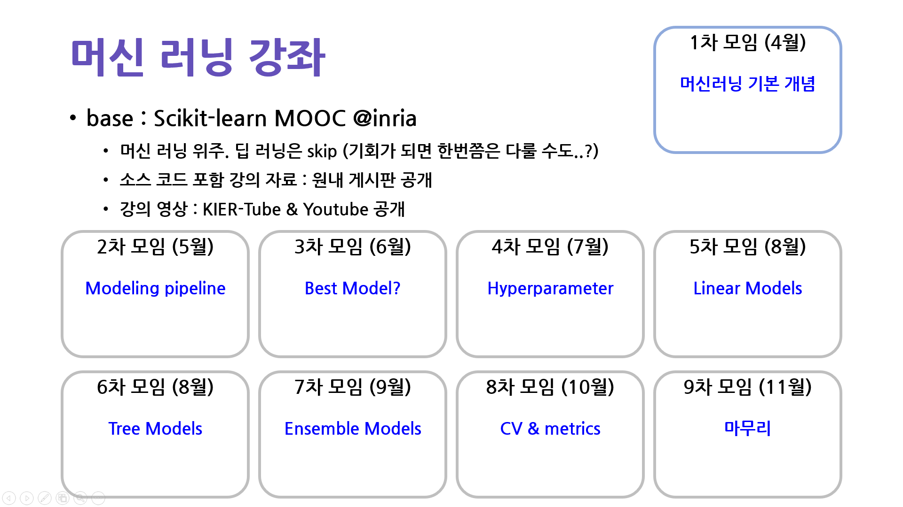

- 한국에너지기술연구원 AI 학습조직에서는 2022년 한 해동안 머신러닝을 공부하고 있습니다.
- scikit-learn 기능 중 데이터 전처리와 머신 러닝을 안정적으로 수행할 수 있는 파이프라인을 소개합니다.
- one-hot encoding과 standard scaling도 그냥 하면 안 됩니다.
- train set으로 학습해서 test set에 적용해야 합니다.
- feature importance는 permutation importance로 확인합시다.
- 강의 자료는 여기에서 다운받으실 수 있습니다
발표 영상 : (Youtube Link)
실습 코드 : (https://bit.ly/3MOtZr6)
* 바쁜 연구원 일정 속에 변동이 있겠지만, 최대한 일정을 지켜보고자 합니다.
